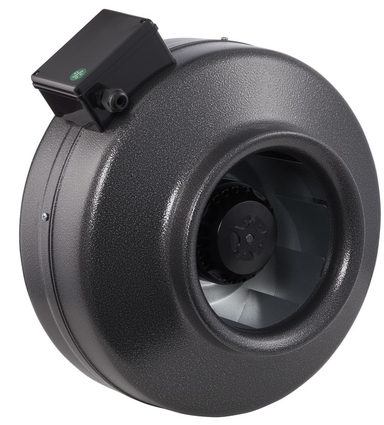

сплиты
ULTIMA COMFORT
ULTIMA COMFORT (Ультима Комфорт) ECLIPSE ECS-07PN обеспечивает защиту от обдува холодным воздухом при включении устройства. При активации функции и перед началом работы аппарат подает воздух, прогретый электрическим нагревателем, чтобы избежать неприятного холодного потока в начальный период работы.
19 690₽
ULTIMA COMFORT (Ультима Комфорт) Impreza IMP-09PN — этот настенный кондиционер обладает стильным и современным дизайном, который легко сочетается с любым интерьером. Благодаря мощному компрессору типа on/off и режиму TURBO он обеспечивает быстрое достижение желаемых температур с высоким уровнем комфорта.
21 790₽
ULTIMA COMFORT (Ультима Комфорт) Impreza IMP-12PN представляет собой современное и эффективное устройство, разработанное для обеспечения уюта в интерьере. Режим комфортного сна снижает шум и настраивает работу на оптимальный уровень. Сплит-система славится своей надежностью и долговечностью, обеспечивая стабильную производительность в течение продолжительного периода времени.
28 590₽
XIGMA
Xigma XG-EFD21RHA-IDU/XG-EFD21RHA-ODU ExtraForce кондиционер с классическим управлением on-off. Кондиционеры Xigma серии ExtraForce оснащены антикоррозийным покрытием Golden Fin на наружном блоке. Это покрытие с диоксидом титана хорошо защищает кондиционер от воздействия дождя, снега и других агрессивных факторов внешней среды.
Помимо 4 основных режимов работы есть режим самоочистки внутреннего блока и ночной режим. Самоочистка помогает поддерживать чистоту внутри прибора. Ночной режим позволяет создать более комфортные условия для сна.
19 990₽
Xigma XG-EFD27RHA-IDU/XG-EFD27RHA-ODU ExtraForce кондиционер с классическим управлением on-off. Кондиционеры Xigma серии ExtraForce оснащены антикоррозийным покрытием Golden Fin на наружном блоке. Это покрытие с диоксидом титана хорошо защищает кондиционер от воздействия дождя, снега и других агрессивных факторов внешней среды.
Помимо 4 основных режимов работы есть режим самоочистки внутреннего блока и ночной режим. Самоочистка помогает поддерживать чистоту внутри прибора. Ночной режим позволяет создать более комфортные условия для сна.
22 190₽
Xigma XG-EFD35RHA-IDU/XG-EFD35RHA-ODU ExtraForce кондиционер с классическим управлением on-off. Кондиционеры Xigma серии ExtraForce оснащены антикоррозийным покрытием Golden Fin на наружном блоке. Это покрытие с диоксидом титана хорошо защищает кондиционер от воздействия дождя, снега и других агрессивных факторов внешней среды.
Помимо 4 основных режимов работы есть режим самоочистки внутреннего блока и ночной режим. Самоочистка помогает поддерживать чистоту внутри прибора. Ночной режим позволяет создать более комфортные условия для сна.
29 290₽
МОРОЗКО
Наличие системы самодиагностики в настенной сплит – системе МОРОЗКО Байкал КНБИ-БКЛ07ОН позволяет контролировать рабочие процессы и обнаруживать возможные неисправности. Внутренний блок системы готов к установке Wi-Fi-модуля, чтобы управлять им можно было с помощью смартфона или планшета. Для очистки воздушных масс в блоке установлен противопылевой фильтр.
29 990₽
Настенный кондиционер МОРОЗКО Байкал КНБИ-БКЛ09ОН произведен для бытового использования, оснащен инверторной технологией охлаждения и обогрева и относится к А классу энергоэффективности, обеспечивая существенное снижение потребления электроэнергии. Настраивать и управлять устройством просто и удобно, достаточно подключить пульт и осуществлять нажатие кнопок.
32 690₽
Mitsudai
 Классические сплит-системы SENTO работают в 4 режимах: охлаждение, нагрев, вентиляция и осушение. В линейке представлены пять моделей с индексами 7k, 9k, 12k, 18k и 24k. Создать оптимальную температуру в помещении можно в любой площади. Все сплит-системы имеют скрытый LED-дисплей, что позволяет устройству идеально вписаться в любой интерьер.
Классические сплит-системы SENTO работают в 4 режимах: охлаждение, нагрев, вентиляция и осушение. В линейке представлены пять моделей с индексами 7k, 9k, 12k, 18k и 24k. Создать оптимальную температуру в помещении можно в любой площади. Все сплит-системы имеют скрытый LED-дисплей, что позволяет устройству идеально вписаться в любой интерьер.
51 490₽
Классические сплит-системы SENTO работают в 4 режимах: охлаждении, нагреве, вентиляции и осушении. В линейке представлены пять моделей с индексами 7k, 9k, 12k, 18k и 24k.
Создать оптимальную температуру в помещении можно в любой площади. Все сплит-системы имеют скрытый LED-дисплей, что позволяет устройству идеально вписаться в любой интерьер.
63 090₽
ROYAL CLIMA
 Прекрасная модель сплит-системы Royal Clima (Роял Клима) GLORIA RC-GL22HN идеальна для размещения в небольших помещениях до 22 кв.м. Тонкая хромированная вставка на передней панели является украшением внутреннего блока и подчёркивает идеальные его формы. За белоснежным светопрозрачным пластиком скрыт LED- дисплей.
Прекрасная модель сплит-системы Royal Clima (Роял Клима) GLORIA RC-GL22HN идеальна для размещения в небольших помещениях до 22 кв.м. Тонкая хромированная вставка на передней панели является украшением внутреннего блока и подчёркивает идеальные его формы. За белоснежным светопрозрачным пластиком скрыт LED- дисплей.28 590₽
Настенная модель кондиционера Royal Clima (Роял Клима) GLORIA RC-GL28HN оснащена функцией запоминания положения жалюзи. После выключения и повторного включения кондиционера жалюзи будут установлены в положение, ранее заданное пользователем. Установленный надежный компрессор японского производства отвечает за работу всей сплит-системы, а дополнительная звукоизоляция компрессора обеспечивает низкий уровень наружного блока.
31 590₽
Кондиционер ROYAL Clima PANDORA RC-PD35HN обладает минималистичным и одновременно притягивающим взгляд дизайном.
К безусловным преимуществам серии можно отнести многоступенчатую систему очистки воздуха состоящую из
фильтров тонкой очистки Silver Ion и Active Carbon, а так же функции ионизации, значительно улучшающей
качество воздуха в помещении, уничтожающей вредоносные химические соединения и микробы(только для моделей
с индексами 22,28 и 35).Помимо этого сплит-система оснащена функцией равномерного распределения воздушного потока 3D AUTO AIR, которая позволяет управлять горизонтальными и вертикальными жалюзи внутреннего блока с пульта управления, обеспечивая равномерное распределение воздушного потока по всему помещению или же его фиксацию в одном необходимом направлении. А благодаря функции IFEEL вы всегда сможете отследить изменение температурного показателя в месте нахождения пользователя.
42 490₽
FUNAI
 FUNAI (Фунай) SENSEI RAC-SN20HP.D04 представляет собой экономичную настенную сплит-систему, которая станет прекрасным выбором для небольшой спальни или другой комнаты, где нужна не только комфортная атмосфера, но и тишина. Внутренний блок оборудован встроенным ионизатором, который вырабатывает отрицательно заряженные частицы, что способствует устранению вредных микроорганизмов.
FUNAI (Фунай) SENSEI RAC-SN20HP.D04 представляет собой экономичную настенную сплит-систему, которая станет прекрасным выбором для небольшой спальни или другой комнаты, где нужна не только комфортная атмосфера, но и тишина. Внутренний блок оборудован встроенным ионизатором, который вырабатывает отрицательно заряженные частицы, что способствует устранению вредных микроорганизмов.
28 990₽
Бесшумная инверторная сплит-система Funai (Фунай) SENSEI RAC-I-SN25HP.D04 отличается элегантным дизайном и передовым функционалом. Автоматическое управление воздушным потоком в четырех направлениях обеспечивает полноценный охват помещения, а технология DС PAM Inverter позволяет плавно изменять температуру и поддерживать ее точно на заданном уровне. Входящие в комплект фильтры с серебром делают воздух чистым и свежим.
31 390₽
Модель настенной сплит-системы FUNAI (Фунай) SENSEI RAC-SN35HP.D04 поможет Вам избавиться от проблемы некомфортной атмосферы в помещении. Данный кондиционер будет актуален круглый год, поскольку работает и на охлаждение, и на обогрев. Предусмотренная в нем система фильтрации и ионизации воздуха позволит сделать воздух в комнате гораздо более чистым.
40 490₽
OPENAIR BY ZILON

Доверьтесь нашему канальному вентилятору Zilon ZFO 100 Z для эффективной вентиляции в промышленных условиях — надежность, производительность и удобство в одном оборудовании. Производитель гарантирует, что аппарат выполняет все поставленные перед ним требования, обеспечивая эффективную работу без создания дополнительных неудобств для потребителя.
7 133₽
Рассматриваемый канальный вентилятор Zilon ZFO 125 Z — это вершина надежности в обеспечении непрерывной подачи воздуха по круглым воздуховодам в помещениях различного назначения. Это оборудование не просто идеально подходит для промышленных задач — оно становится их незаменимым решением благодаря высочайшей производительности и надежности.
7 272₽
Каждый аспект канального вентилятора Zilon (Зилон) ZFO 160 Z разработан с учетом требований самых требовательных клиентов. В комплект поставки этого вентилятора входят клеммная коробка и кронштейны, обеспечивая удобный и быстрый монтаж. Это значительно упрощает процесс установки, делая его доступным даже для непрофессионалов.
8 379₽
X-COMFORT
Внутренние блоки серии X-COMFORT выполнены в едином форм-факторе с
компактной шириной всего 78 см и обладают рекордно низким уровнем
звукового давления - на самой низкой скорости вентилятора (Super Low)
уровень шума составляет всего 19 дБ(А), что обеспечивает комфортный сон ночью.
Широкий модельный ряд включает модели холодопроизводительностью 2, 2,5, 3,5 и 5 кВт.
Комфортное воздухораспределение достигается благодаря горизонтальному автосвингу -
автоматическому качанию горизонтальной створки жалюзи (вверх-вниз). Направление
воздушного потока по вертикали (влево-вправо) регулируется ручной установкой
вертикальных створок жалюзи в требуемое положение. Работу кондиционера в
течение дня легко программировать благодаря функции 12-часовго таймера,
активируемой с пульта. Функция сушки испарителя предотвращает появление
плесени. Кондиционер оснащен функциями Eco и Powerful.
72 900₽
Внутренние блоки серии X-COMFORT выполнены в едином форм-факторе с
компактной шириной всего 78 см и обладают рекордно низким уровнем
звукового давления - на самой низкой скорости вентилятора (Super Low)
уровень шума составляет всего 19 дБ(А), что обеспечивает комфортный сон ночью.
Широкий модельный ряд включает модели холодопроизводительностью 2, 2,5, 3,5 и 5 кВт.
Комфортное воздухораспределение достигается благодаря горизонтальному автосвингу -
автоматическому качанию горизонтальной створки жалюзи (вверх-вниз). Направление
воздушного потока по вертикали (влево-вправо) регулируется ручной установкой
вертикальных створок жалюзи в требуемое положение. Работу кондиционера в
течение дня легко программировать благодаря функции 12-часовго таймера,
активируемой с пульта. Функция сушки испарителя предотвращает появление
плесени. Кондиционер оснащен функциями Eco и Powerful.
76 900₽
Внутренние блоки серии X-COMFORT выполнены в едином форм-факторе с
компактной шириной всего 78 см и обладают рекордно низким уровнем
звукового давления - на самой низкой скорости вентилятора (Super Low)
уровень шума составляет всего 19 дБ(А), что обеспечивает комфортный сон ночью.
Широкий модельный ряд включает модели холодопроизводительностью 2, 2,5, 3,5 и 5 кВт.
Комфортное воздухораспределение достигается благодаря горизонтальному автосвингу -
автоматическому качанию горизонтальной створки жалюзи (вверх-вниз). Направление
воздушного потока по вертикали (влево-вправо) регулируется ручной установкой
вертикальных створок жалюзи в требуемое положение. Работу кондиционера в
течение дня легко программировать благодаря функции 12-часовго таймера,
активируемой с пульта. Функция сушки испарителя предотвращает появление
плесени. Кондиционер оснащен функциями Eco и Powerful.
83 900₽
Внутренние блоки серии X-COMFORT выполнены в едином форм-факторе с
компактной шириной всего 78 см и обладают рекордно низким уровнем
звукового давления - на самой низкой скорости вентилятора (Super Low)
уровень шума составляет всего 19 дБ(А), что обеспечивает комфортный сон ночью.
Широкий модельный ряд включает модели холодопроизводительностью 2, 2,5, 3,5 и 5 кВт.
Комфортное воздухораспределение достигается благодаря горизонтальному автосвингу -
автоматическому качанию горизонтальной створки жалюзи (вверх-вниз). Направление
воздушного потока по вертикали (влево-вправо) регулируется ручной установкой
вертикальных створок жалюзи в требуемое положение. Работу кондиционера в
течение дня легко программировать благодаря функции 12-часовго таймера,
активируемой с пульта. Функция сушки испарителя предотвращает появление
плесени. Кондиционер оснащен функциями Eco и Powerful.
123 900₽
MULTI PREMIUM
Мульти сплит-система серии Multizone Premium имеет высокую производительность
и работает на озонобезопасном хладагенте R32, выдавая сезонную энергоэффективность
А+++/A++. Максимальное количество внутренних блоков – два, что в 90% случаев
отвечает большинству запросов. Применение мульти сплит-систем способствует
сохранению внешнего вида зданий снаружи, так как вместо нескольких наружных
блоков ставится всего один. Компактные внешние блоки способны размещаться
в ограниченном пространстве в виде технических помещений, балконах
или специальных корзинах на фасаде дома.
176 400₽
Мульти сплит-система серии Multizone Premium имеет высокую производительность
и работает на озонобезопасном хладагенте R32, выдавая сезонную энергоэффективность
А+++/A++. Максимальное количество внутренних блоков – два, что в 90% случаев
отвечает большинству запросов. Применение мульти сплит-систем способствует
сохранению внешнего вида зданий снаружи, так как вместо нескольких наружных
блоков ставится всего один. Компактные внешние блоки способны размещаться
в ограниченном пространстве в виде технических помещений, балконах
или специальных корзинах на фасаде дома.